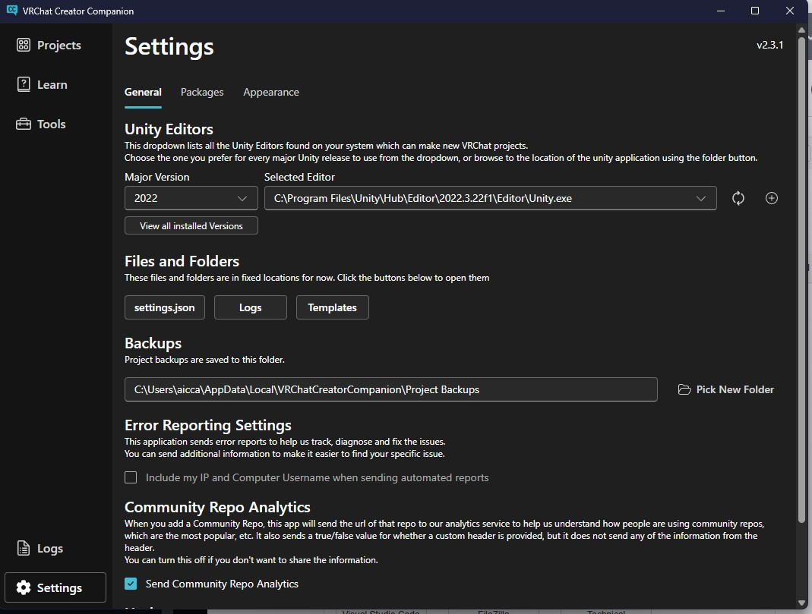
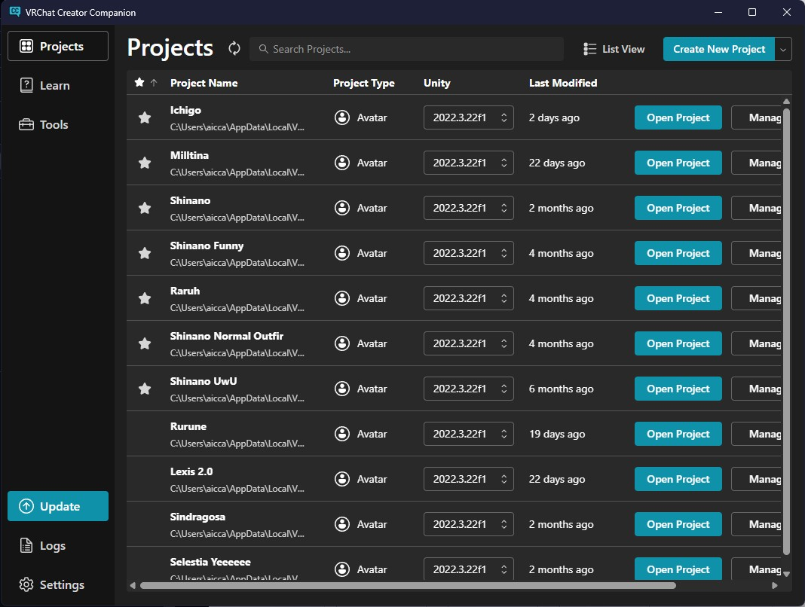
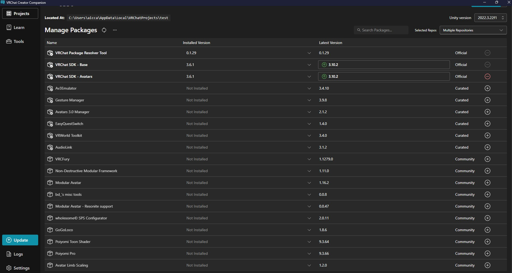

| Step1: Click on the seetting gear icon and in general clcik view all installed version and see id the version is installed correctly. |  |
| Step 2: Click on Create new Project, then select Unity 2022 Avatar Ptoject and name the project. |  |
| Step 3: In the manage pachages click the plus iocon on VRCFury and Modular Avatar (The packages lkist vary on whats installed). The click on open project. |  |